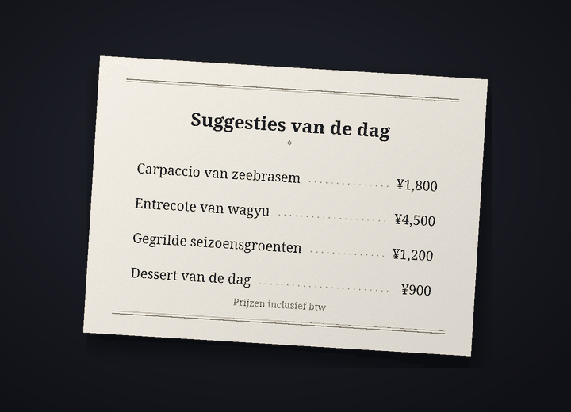

Vertaalbot voor Discord-chats
Chat op Discord in je eigen taal
Cozirom is een Discord-bot die de chat vertaalt naar de taal van de ander. Zet je hem aan, dan worden je berichten vertaald geplaatst onder je eigen naam en profielfoto, en tekst in afbeeldingen wordt ook vertaald.
Zo begin jeAbonnementen bekijken
Vertalingen worden gemaakt door AI (Claude van Anthropic). Ze kunnen fout zijn, dus check bij iets belangrijks ook het origineel.
Wat de bot doet
Eén bot vertaalt tekst, afbeeldingen en spraak
De limieten van abonnementen worden in vertalingen geteld. Eén bericht vertaald naar één taal telt als 1.
6 functies
In vertalingen
Automatisch vertalen
Voer
/vertalen aanéén keer uit en je berichten op die server verschijnen in de andere taal, onder je eigen naam en profielfoto. Het origineel blijft in kleine tekst onder de vertaling staan, en de knop toont het volledige origineel.
toont het volledige origineel.Vertalingen1 per bericht
Tekst in afbeeldingen
Menukaarten, gameschermen, memes: staat er tekst in een afbeelding, dan wordt die gelezen en vertaald. Open het via het pictogram
 onder afbeeldingen van mensen die vertalen hebben aangezet, of met rechtsklik. Alleen wie erom vroeg ziet het resultaat, en afbeeldingen zonder tekst tellen niet mee.
onder afbeeldingen van mensen die vertalen hebben aangezet, of met rechtsklik. Alleen wie erom vroeg ziet het resultaat, en afbeeldingen zonder tekst tellen niet mee.VertalingenOngeveer 9 per afbeelding
Vertaling op de afbeelding
Via het pictogram
 krijg je een kopie van de afbeelding waarin de originele tekst is gewist en de vertaling op die plek is getekend. Eerst staat het lettertype op “Zoals het origineel”, dicht bij de originele letters, en je kunt kosteloos wisselen tussen maximaal 10 lettertypesets zoals “Schreefletter”, “Handschrift” en “Strip”. Het werkt het best bij horizontale tekst zoals screenshots, memes, gameschermen en menukaarten, en alleen wie erop drukte ziet het resultaat.
krijg je een kopie van de afbeelding waarin de originele tekst is gewist en de vertaling op die plek is getekend. Eerst staat het lettertype op “Zoals het origineel”, dicht bij de originele letters, en je kunt kosteloos wisselen tussen maximaal 10 lettertypesets zoals “Schreefletter”, “Handschrift” en “Strip”. Het werkt het best bij horizontale tekst zoals screenshots, memes, gameschermen en menukaarten, en alleen wie erop drukte ziet het resultaat.VertalingenOngeveer 19 per afbeelding


Voorbeeld: de originele foto (een Japanse menukaart) en dezelfde foto met de tekst gewist en de Nederlandse vertaling op die plek getekend in het lettertype “Schreefletter”. Spraakberichten
Rechtsklik op een spraakbericht dat vanuit de telefoon-app is verstuurd en je ziet wat er gezegd is, met de vertaling erbij. Berichten tot 3 minuten worden getranscribeerd, en berichten zonder spraak tellen niet mee.
Vertalingen1 per seconde, plus de vertalingEen bericht van 10 seconden telt meestal 11
Vier tonen
Slang, Casual, Vriendelijk of Formeel, per server te kiezen. Jij tegen vrienden, u op een nieuwe plek. Met het Guest-abonnement (gratis) heb je de eerste 14 dagen alle vier, daarna de vriendelijke toon.
VertalingenBetaald: alle vier. Free: de eerste 14 dagen
31 talen
Er wordt vertaald tussen 31 talen. De interface en de commandonamen van de bot zijn er in 30 Discord-talen, dus de ander stelt hem gewoon in de eigen taal in.
Vertalingen31 voor vertalen, 30 voor de interface

Zo begin je
Drie stappen en je berichten verschijnen vertaald onder je naam
Voeg de bot toe aan de server
Een serverbeheerder voegt de bot toe aan de server. Vraag de uitnodigingslink aan op de supportserver.
Zet vertalen aan
Wie vertaald wil worden, voert
/vertalen aanuit op die server. De bot raadt jouw taal en die van de ander en opent het instellingenpaneel. Klopt het niet, pas het dan aan in de keuzemenu's.Schrijf zoals altijd
Schrijf zoals altijd en de vertaling verschijnt onder je naam. Begin met het Guest-abonnement (gratis) en stap via de abonnementenpagina over op een ander abonnement als je meer nodig hebt.
Privacy
Te vertalen berichten en afbeeldingen gaan alleen naar Anthropic (VS), en het geluid van spraakberichten alleen naar Google (VS). De bot bewaart het origineel van een geplaatste vertaling 14 dagen en gecachete vertalingen 30 dagen, en slaat geen afbeeldingen, geluid of de daaruit gelezen tekst op. Chatinhoud komt nooit in logs terecht, en met /vertalen gegevens-verwijderen verwijder je je gegevens wanneer je wilt.